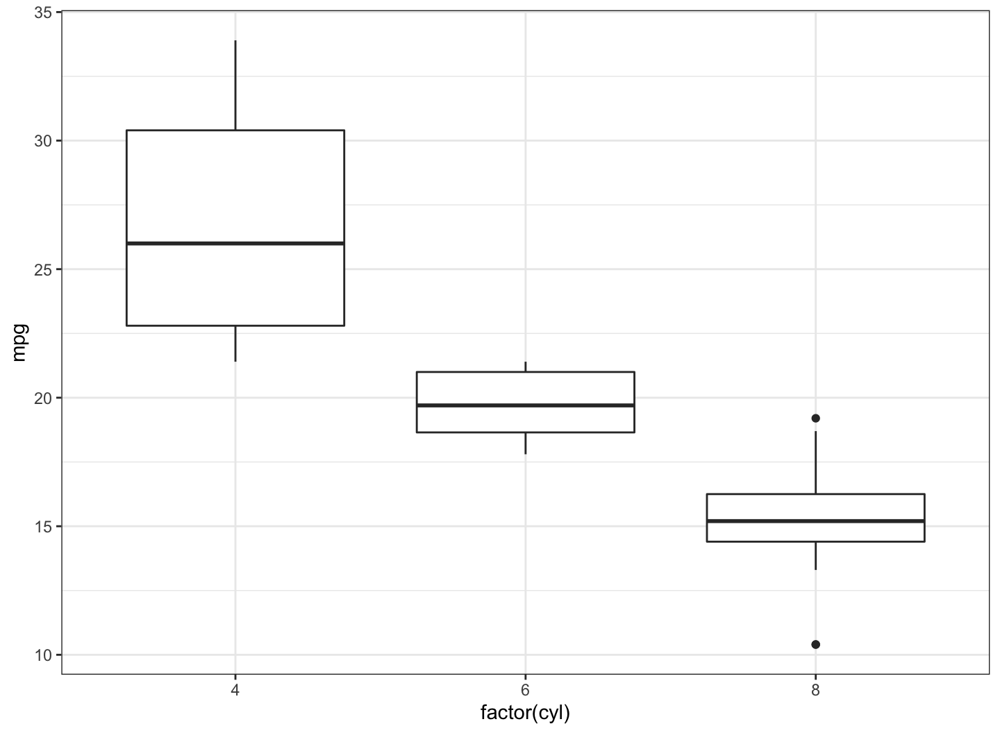
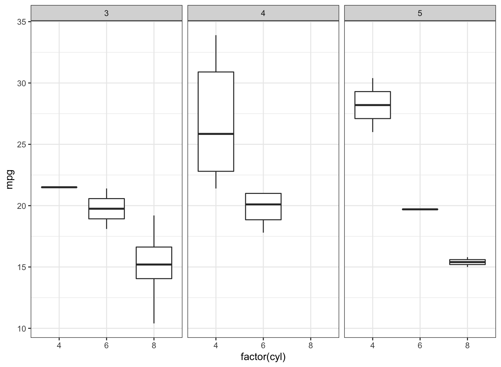
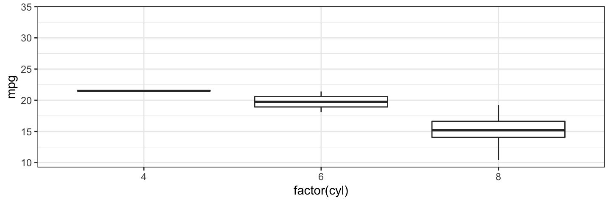

March 24, 2022
# install.packages("gganimate")
# install.packages("gifski") # for PCs.
# install.packages("transformr") # for manipulating polygons and paths
# install.packages("magick") # for rendering
library(tidyverse)
library(gganimate)
library(gifski)
library(transformr)
library(magick)
theme_set(theme_bw())
data(mtcars)
p <- ggplot(data = mtcars,
mapping = aes(x = factor(cyl), y = mpg)) +
geom_boxplot()
p

p + facet_wrap(~gear)

gganimate turn our ggplot visualizations into moving images.
my_anim <- p + transition_states(gear) my_anim

transition_states() is intended to use primarily with categorical variables.
transition_length and state_length arguments.my_anim <- p +
transition_states(gear,
transition_length = 3, # relative length
state_length = 2) # relative length
my_anim